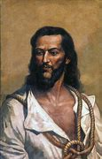

Julgamento e Morte de Tiradentes
Após a prisão dos conspiradores da inconfidência, houve diversos julgamentos e interrogatórios. Dentre os acusados, diversos deles negaram ou distorceram o envolvimento com as conspirações, sendo alguns deles delatores do próprio Tiradentes. No entanto, 9 dos 10 envolvidos na Inconfidência Mineira foram perdoados pela rainha, sendo Tiradentes o único acusado de morte. Um dos possiveis motivos para que Tiradentes não fosse perdoado, se encontra o fato dele ser o único que assumiu suas contribuições conspiratórias e representava um perigo iminente para a Monarquia.
O Mártir
O Mártir de Tiradentes foi fundamentado após sua morte, com a proclamação da república. Na época do perído colonial e imperial a imagem de Tiradentes foi esquecida, sendo exaltada no perído da proclamação da republica e sendo comparada com Cristo em diversas retratações, pelo fato de ter sido morto para uma causa maior.
Esquartejamento de Tiradentes
Após Tiradentes ter sido enforcado pela corte portuguesa seu corpo foi esquartejado e colocado em diferentes regiões para servir de exemplo para possiveis conspiradores ou personalidades dissidentes.